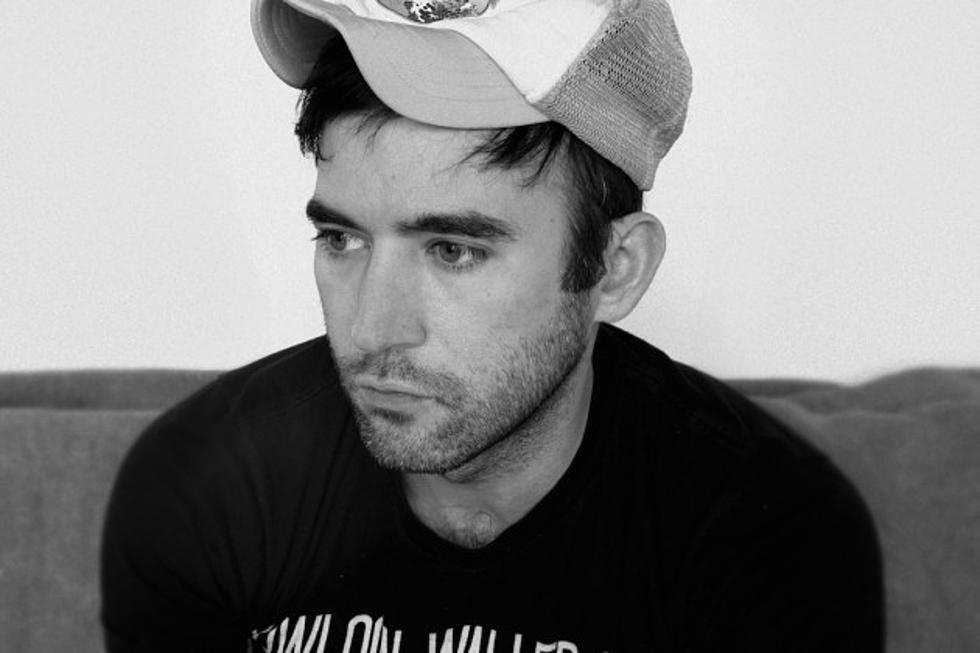
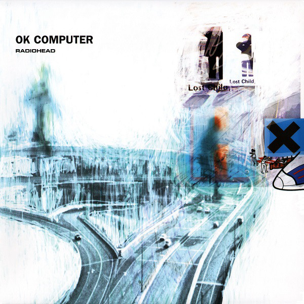
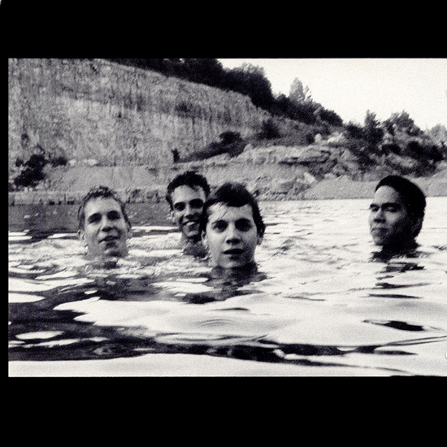

Music
When I'm not at college or somewhere with my friends, I'm most likely to be doing something while listening to music. I've liked listening to music pretty much since I was born, but I started to pay more interest and seek to discover new music more intensely in the last couple of years. I can't specify a single favourite genre, but some of my favourites are alternative rock, post-rock, indie rock, post-punk, ambient and chamber pop. If you want to get a better look at my music taste, you can visit my Last.fm profile or my RateYourMusic profile. You can see some of my favourite artists and albums below.
-

Radiohead
-

Sufjan Stevens
-

King Gizzard & the Lizard Wizard
-

Arcade Fire
-
Godspeed You! Black Emperor
-
Grizzly Bear
-
Swans
-
Joanna Newsom
-
David Bowie
-
Sigur Rós
-
Aphex Twin
-
LCD Soundsystem
-
Talking Heads
-
Pixies
-
Tim Hecker
-
Fishmans
-
GY!BE
Lift Yr. Skinny Fists Like Antennas to Heaven! -
GY!BE
F♯ A♯ ∞ -
Radiohead
Kid A -

Fishmans
Long Season -

Radiohead
OK Computer -
Joanna Newsom
Ys -
Interpol
Turn on the Bright Lights -
Unwound
Leaves Turn Inside You -
Sigur Rós
Ágætis Byrjun -

Slint
Spiderland -

Joy Division
Unknown Pleasures -
Massive Attack
Mezzanine -

Sigur Rós
() -
Sufjan Stevens
Carrie and Lowell -

Talking Heads
Remain in Light -
Arcade Fire
Funeral